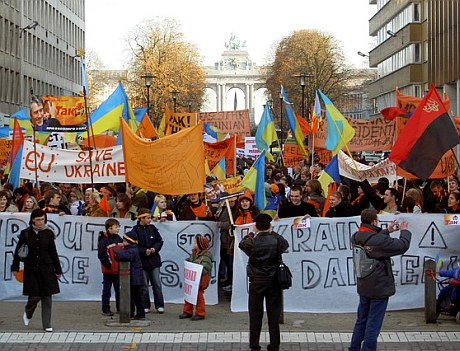
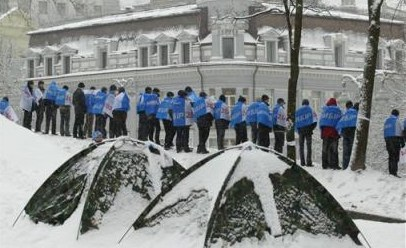
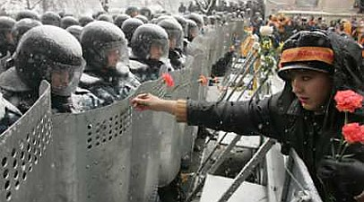

![[ Japanese flag ]](../kraiany/images/jp.png) |
 |
![[ Ukranian flag ]](../kraiany/images/uk.png) |

|
|
|
Галерея краян
Click on links below to see Kraiany Gallery
Фотогалерея Краян
Зареєструватись |
4й деньЮЩЕНКІВЦІ ЗАБЛОКУВАЛИ ВСІ ВХОДИ ДО КАБМІНУ ТА АП9:41 УСІ ВХОДИ ДО АП І КАБМІНУ ЗАБЛОКОВАНО ЮЩЕНКІВЦЯМИУсі близько 15 під’їздів до адміністрація президента та всі входи та в’їзди до Кабінету міністрів заблоковано прихильниками Віктора Ющенка. Як повідомив „Українській правді” один із координаторів масових акцій в Києві Юрій Луценко, це сталося у п’ятницю зранку. Входи заблоковано людьми і автобусами. За його словами, дійсно у п’ятницю зранку перед телекамерами Кучма планував „підписати акт про передачу влади Януковичу”. Для цього до АП протягом ночі було стягнуто нові сили спецпідрозділів. Також до адміністрації президента зранку прибув передовий загін охорони Кучми – однак, переконавшись у блокуванні будівлі, залишили місце подій. За словами Луценка, він особисто спілкувався з командуванням внутрішніми військами, і воно при ньому дало команду на відведення сил. Як відомо, зранку спецпідрозділ „барс”, який входить до внутрішніх військ, заблокував вулиці Інститутську, Шовковичну і Садову. 6:40, 8:00 МІЛІЦІЯ ЗАБЛОКУВАЛА ВУЛИЦІ ІНСТИТУТСЬКУ І ШОВКОВИЧНУСуцільні кордони спецназу "Барс" і міліції стали поперек вулиці Інститутської. Вони знаходяться на рівні будинком вище Нацбанку. "Барс" заблокував вулицю Садову біля під'їздів Кабінету міністрів. Також "барс" став буквою "Г" на перехресті вулиць Шовковичної та Інститутської. Таким чином всередині ціж цими розташуваннями "барсу" утворився простір у півтора квартала, усередину якого нікого не пускають. Багато мітингувальників знаходяться всередині кільця, утвореного спецназом, але якщо вийдеш, то назад до цього кільця не потрапиш. Крім того, спецпідрозділ заблокував Шовковичну на рівні вулиці Пилипа Орлика. Таким чином міліція з‘явилася у тих місцях, де вони раніше не стояли. Під кордонами міліції скупчуються протестувальники. Схоже на те, що, "барс" розсік групи натовпів. Також звертає увагу те, що "барс" не має в руках щитів, а дехто навіть шоломів на голові. Таким чином, для опозиції заблоковано підтягування нових мітингувальників до під'їзду №6 Кабміну. Це єдиний під'їзд будинку уряду, куди не можуть підійти нові мітингувальники. Також неможливо підтягнути нових мітингувальників до в'їзду у двори адміністрації президента з боку Шовковичної. При цьому люди також заблокували цей в'їзд мікроавтобусами. Водночас у цьому районів понад 150 автобусів із спецназом. Як відомо, у п'ятницю опозиція планувала заблокувати будинок Кабінету міністрів і не дозволити чиновникам вийти на роботу в рамках всеукраїнського страйку. Люди вночі заблокували всі входи до Кабміну з вулиці. Водночас у п'ятницю в Януковича запланована зустріч з президентом Польщі Квасневським у будинку уряду. 04:20Глибокої ночі прихильники Віктора Ющенка тримають осаду Кабінету міністрів, адміністрації президента та Верховної Ради. Люди заблокували всі входи та в’їзди до Кабміну. На сходах під’їздів уряду лягли пікетувальники, частина спить, частина співає. Двері уряду заклеєли наліпками „Так! Ющенко”. Центральний в’їзд до Кабінету міністрів заблоковано потрійним кордоном людей, там перебуває близько двохсот осіб. Люди також стоять на схилах навпроти Кабміну. Пікетувальники також блокують ворота, які ведуть у внутрішній двір уряду. Зокрема, охоронцям на головному в’їзді ющенківці співають народні пісні. Значно менше людей біля Верховної Ради, однак і там люди стоять біля проходів, які ведуть за огорожу під парламентом. Під адміністрацією призидента ситуація практично не змінюється. На всіх в’їздах стоять люди. З боку вулиці Лютеранської – близько 200 осіб, а прохід блокує подвійний кордон спецпідрозділів чисельністю 100 осіб. Бійці стоять у шоломах, однак щити не у бойовій готовності, а вони їх тримають, обперши об землю. Перед бійцями стоять дівчата, які співають народні пісні, пританцьовуючи на морозі. З боку Інститутської близько тисячі осіб. Уночі відбулося прибирання території, тому більшу частину людей на час відвели на 50 метрів. З цього боку беркутівці стоять так само спокійно. На залізному паркані, який міліція виставила вздовж будинку АП, ющенівці повісили герлянду із помаранчевих кульок. Також вночі багато людей на Хрещатику і Майдані незалежності. Багато людей біля „Українського дому”, де на нічівлю зупинилося майже 1 000 осіб. 2:08Представники штабу Ющенка не виключають проведення у ніч з четверга на п’ятницю провокацій проти мітингувальників у центрі Києва. Один із організаторів мітингу Юрій Луценко повідомив "Українській правді" навів фактори, які на це вказують: "Перше – наружне спостереження СБУ за акцією знято в період з 2 до 4 ранку. Друге – донецький спецпідрозділ беркуту не повернувся на місце свого базування, де він перебував весь час. Третє – сьогодні на інструктаж було зібрано бригаду достроково звільнених зеків. Четверте – з офісу провокаторів Коваленка УНА вийшла група в 50 осіб, переодягнутих у нашу форму". 1:45Гурт "ВіаГра" і його продюсери Костянтин Меладзе і Дмитро Костюк спростовують інформацію про підтримку "ВіаГрою" кандидата в президенти Віктора Януковича та повідомляють, що гурт завжди підтримував Віктора ЮЩЕНКА. Як повідомили вони УНІАН, зокрема "ВіаГра" й продюсери особисто передали до наметового містечка на Хрещатику понад 1000 валянок і передадуть ще таку ж кількість. Водночас, як повідомив Євген Захаров, співголова Харківської правозахисної групи з посиланням на джерела, три автобуси з "братками" із Донецька привезли для ліквідації наметового містечка в Харкові. Напад планується на другу годину ночі. Лікарня швидко допомоги повністю мобілізована для прийому поранених - про це повідомив один з лікарів, який побажав залишитися невідомим. Міліція повідомлена, але запобіжних заходів поки що не вживає.  Мітинг прихильників Ющенка в центрі Брюсселя 23:3020-вагонний запорізький потяг з прихильниками Віктора Януковича після тривалої стоянки в Ірпені (Київська область) попрямував через Київ назад до Запоріжжя. Тривалий час потяг не міг розпочати рух, оскільки близько 50 прихильників Віктора Ющенка вийшли на залізничне полотно і перекрили рух. Проте після того, як машиніст потягу і начальник станції надали документи, які підтверджують, що потяг дійсно прямує назад до Запоріжжя, люди розійшлися. Як повідомляв УНІАН, у середу жителі Ірпеня не пустили до Києва близько 10 автобусів, в які пересадили прихильників Віктора Януковича - пасажирів потягу із Запоріжжя. Після цього прихильників Януковича знову посадили в потяг. Під час спілкування з пасажирами вдалося взнати, що основна частина приїжджих - працівники металургійних підприємств Запорізької області. 22:45Асоціація зовнішньої реклами звернулася до всіх операторів зовнішньої реклами, до всіх рекламних агентств розмістити на максимально великій кількості площин постери жовтогарячих кольорів без будь-яких текстів. Цим рекламісти можуть продемонструвати свою солідарність із людьми, що виходять на вулиці міст України. Позиція учасників Асоціації до подій, що відбувають сьогодні в Україні, була вироблена на позачерговому засіданні асоціації. "Також вітається будь-яка ініціатива з розміщенням більших форматів (банерів) на фасадах будинків. Проявіть свій громадянський обов'язок, висловіть голосно своє відношення до подій!!!" 21:43Зараз біля Кабінету Міністрів України в Києві зібралося декілька десятків тисяч людей, які протестують проти фальсифікації виборів президента України. Як передає кореспондент, люди стоять не лише на проїжджій частині вулиці Грушевського, але й на пагорбах Маріїнського парку. Практично усі вікна Будинку уряду темні. Це може свідчити про те, що, дізнавшись про наміри прихильників Віктора Ющенка заблокувати Кабінет Міністрів, його керівники заздалегідь видали розпорядження підлеглим про те, щоб вони раніше, ніж це повинно бути, закінчили робочий день та пішли додому. Водночас аналогічний пікет відбувається біля адміністрації президента, інша частина учасників акції прямує до Верховної Ради, щоб оточити її з усіх сторін. Що стосується охорони Кабміну, то посилення заходів безпеки не спостерігається. Біля в'їзду до центрального входу в Будинок уряду та вздовж кам'яного парапету перебувають лише декілька десятків співробітників Внутрішніх військ МВС України та міліціонерів. У них немає спецзасобів. 20:50Близько 100 курсантів міліцейської академії приєдналися до мітингуючих на майдані Незалежності у Києві. Вони прийшли з боку Контрактової площі, під час проходження повз маніфестантів вони скандували "Молодці!". Як сказав один із курсантів, вони прийшли самостійно, це не є рішенням академії, передає УНІАН. Зараз вони виступають на сцені на майдані Незалежності. Вони кажуть, що прийшли сюди, тому що це поклик їхньої душі. Вони заявляють, що разом з керівниками підтримують маніфестуючих. Слідче управління Оболонського РВВС Києва звернулося до працівників міліції із закликом не виконувати антиконституційні накази. Заяву працівників слідчого управління було оприлюднено на майдані Незалежності у Києві. У документі слідчі зазначають, що вважають найголовнішим виконання присяги, яку давали не владі, а українському народу. Крім того, слідчі зазначають, що не згодні з обранням президентом Віктора Януковича. "Ми глибоко переконані, що Президент України не може бути персона двічі засуджена за зловмисні злочини", - зазначається у заяві, оприлюдненій працівником слідчого управління Оболонського РОВД Києва. "Ми готові добровільно вийти на майдан Незалежності та бути разом з народом", - завершують своє звернення слідчі. 20:44Колона прихильників Віктора Ющенка піднялась від майдану Незалежності і заблокувала проїжджу частину вулиці Грушевського навпроти центрального входу Будинку уряду. Колона нараховує щонайменше 1,5 тис. осіб. Вони скандують "Ющенко!", "Кучму геть!", передає УНІАН. Прихильники Ющенка планують в четвер ввечері заблокувати Будинок уряду, адміністрацію президента, Верховну Раду. Передбачається, що працівники усіх державних установ зможуть покинути адміністративні будинки після закінчення робочого дня. Блокування планується проводити до ранку з тим, щоб завтра не пропустити працівників уряду на їх робочі місця. Напроти Будинку уряду в Маріїнському парку встановлюють намети за Віктора Януковича. Однак навколо цих наметів перебувають лише прихильники Ющенка. Передбачається, що до ранку будуть заблоковані усі входи до Будинку уряду, в тому числі з вулиці Садова. 19:50Опозиція починає мирну облогу Верховної Ради, Кабміну та посилену облогу адміністрації президента. Про це заявила Юлія Тимошенко, виступаючи перед учасниками мітингу на Майдані незалежності. Тимошенко привітала людей з рішенням Верховного Суду по призупиненню оголошення Януковича президентом. "Не дарма ви мерзли, кидали навчання і роботу, бо ми впевнено почали перемагати", - сказала вона. Вона також привітала людей з тим, що вони взяли будинок профспілок і Жовтневий палац. Відзначивши, що іноді її називають найрадикальнішою в комітеті порятунку, Тимошенко наголосила, що "ми маємо продовжити переможну ходу". "Сьогодні ми починаємо організоване, неагресивне, але достатньо сильне блокування Кабінету міністрів, Верховної Ради, і посилимо блокування адміністрації президента", - зазначила Тимошенко. Вона закликала слухати команди Юрія Луценка, який координуватиме цю акцію з іншими депутатами. "Біля адміністрації президента буде діяти комендантська група, біля Кабміну свій керівник, і біля Верховної Ради свій. По всьому периметру стоятиме серйозна озвучка з посиленням звуку, там будуть знати все, що відбуватиметься на майдані і будуть постійно спілкуватися з координаторами акції", - додала вона. За її словами, від сьогодні буде встановлене чергування і нові намети по периметру Грушевського, Інститутської й так далі. "Ми починаємо облогу всієї влади", - сказала Тимошенко. Водночас вона наголосила, що це все треба робити з любов'ю, щоб "перемога не була применшена насиллям". "З сьогоднішнього вечора ми всіх представників цих державних органів з любов'ю випустимо додому, але зранку ніхто з них на роботу не повернеться, тому що ми їм не залишимо жодного ходу, у них буде такий трошечки примусовий страйк", - сказала Тимошенко, зазначивши, що чиновники підтримують Ющенко. Вона також закликала з любов'ю ставитися до людей з регіонів. "Зараз до Києва підходять ешелони й автобуси з нашими донецькими, луганськими і харківськими друзями, вони абсолютно кинуті напризволяще, тому їх потрібно тепло одягнути, нагодувати й перагітувати", - сказала Тимошенко під сміх людей. "І це значить, що десятки тисяч людей будуть поповнювати ряди нашої перемоги", - додала вона. Окрім того Тимошенко повідомила, що з п'ятниці починає діяти штаб блокування всіх автомагістралей. "З завтрашнього дня починаємо поступове блокування і, якщо післязавтра влада не відходить, якщо не дає Ющенку виконувати обов'язки президента України, то післязавтра не буде жодної автомагістралі, яка буде функціонувати", - сказала лідер БЮТ. "Сьогодні в Україні зійшла нова зірка надії, на ваших плечах надії не тільки України, а й всіх країн СНД, які не мають демократії", - звернулася Тимошенко до людей. 19:45Близько трьох тисяч прихильників Віктора Януковича завершили свій мітинг у парку навпроти Будинку уряду у Києві і розійшлися. Вони колонами пішли від КМУ у напрямку Печерської Лаври. Проходячи повз прихильників Віктора Ющенка частина з них разом з прихильниками Ющенка скандувала "Україна" і потискали одне одному руки. Як стало відомо УНІАН від одного з учасників мітингу, серед них були представники Дніпропетровської області, які прибули лише сьогодні зранку. За даними учасника мітингу, загалом, до Києва прибуло 4 потяги з Дніпропетровської області і зупинилися на станції Обухів. "Сподіваємося, що сьогодні поїдемо додому, а якщо ні – доведеться ночувати прямо у вагонах", - сказав співрозмовник агентства. Всі учасники мітингу несли в руках коробки з сухими пайками, які використовуються зазвичай у Збройних Силах України, або у підрозділах МНС. Співрозмовник агентства зазначив, що працює на Нікопольському заводі феросплавів і наголосив, що приїхав самостійно, а не під тиском. 19:1570 польських студентів прибули до Києва підтримати демократію в Україні. Про це заявив сьогодні журналістам голова Спілки польських підприємців в Україні Юрек Конік. Він зазначив, що 50 студентів прибули з Кракова, а ще 20 приєдналися до них з інших міст Польщі. За словами Коніка, взагалі з Кракова бажали виїхати в Україну 200 студентів, однак не змоги цього зробити через відсутність квитків на потяг. Конік повідомив, що студенти прибули до Києва, щоб підтримати українську демократію. "Ми не підтримуємо жодного з кандидатів, ми просто хочемо, щоб український народ сам собі обирав Президента, і щоб не відбувалися чудеса над урнами", - сказав він. Конік зазначив, що ця група студентів залишиться у Києві протягом 3 днів і, можливо, потім буде змінена іншою групою. Зараз студенти із прапорами Європейського Союзу та Польщі ходять по вулицях Києва і скандують "Україна!", демонструючи таким чином свою підтримку українському народу. 16:43Близько 3-х тисяч прихильників Віктора Януковича проводять мітинг у парку напроти Кабінету міністрів. Вони тримають у руках прапори "Вибір-2004 за Януковича" і державні прапори України. Зараз перед ними виступає заступник голови ПСПУ Володимир Марченко. "Те, що ви приїхали сюди – це історичний подвиг, сьогодні від Донеччини залежить майбутнє України", - сказав він. З боку будинку Верховної Ради уздовж мітингуючих стоїть ланцюжок представників міліції – близько 20 чоловік. В цей же час на вулиці Грушевського біля будинку Кабміну знаходиться ще близько 2-х тисяч чоловік - прихильників як Януковича, так і Віктора Ющенка. Вони зосередилися невеликими групами, практично впритул один до одного і скандують свої гасла. Близько 20 дівчат пішли дарувати прихильникам Віктора Януковича гвоздики, частина людей брала квіти, але потім молодики у пов'язках "Вибір-2004", натягнутих на обличчя, взявшись за руки, почали відштовхувати дівчат зі словами: "Ідіть звідси, чого ви сюди прийшли". Як передає кореспондент УНІАН, шахтарі, які мітингують навпроти Кабінету міністрів, заспокоїли молодиків, сказавши, що не потрібно цього робити. Інцидент завершився мирно. Дівчата, взявшись за руки, пішли звідти під прикриттям "Беркута". 16:20Прихильники Віктора Ющенка годують прихильників Віктора Януковича, які знаходяться біля пам'ятника Ватутіну на території Маріїнського парка в Києві. Кияни пригощають їх продуктовими пайками і пропонують гарячий чай. На запитання кореспондента УНІАН до прихильника Януковича, що вони роблять в Києві і кого захищають, той відповів: "Нам вже все одно. Ми вже і за білих, і за червоних, і за синіх, лише б давали самогон і сало". Також прихильники Януковича знаходяться в парку біля Кабміну і спілкуються з прихильниками Ющенка.  Фото АР 15:55Колона прихильників Віктора Януковича вступила на Європейську площу, де перебувають прихильники Віктора Ющенка. Вони тримають в руках біло-блакитні прапори, які вже перемішалися з жовтогарячими прапорами Ющенка. Обидві сторони намагаються переконати один одного в тім, що їхній кандидат - краще. Будь-якої агресії немає. Деякі дівчата і прихильниці Януковича одягнені в білі каски й пропонують їх прихильникам Ющенка. Ті у відповідь пропонують опонентам жовтогарячу символіку. Колона зупинилася. Люди перемішалися, передає Інтерфакс-Україна. За словами прихильників Януковича, їх у колоні близько 5 тис. чоловік, але зараз не можливо це підтвердити. 15:48З Харкова на підтримку Віктора Януковича у Київ виїхали три потяга і близько 50 автобусів з людьми. Як повідомляє кореспондент UNIAN, про це сказав на прес-конференції голова обласної державної адміністрації Євген Кушнарьов, відповідаючи на запитання журналістів. При цьому він не назвав кількості людей, але зазначив, що "жодна установа у Харкові роботи не припиняла". Характеризуючи обстановку на Харківщині, він сказав, що вона абсолютно нормальна і стабільна. "Область не охоплена полум'ям", і він не бачить передумов, щоб ця обстановка загострювалася. Кушнарьов висловився проти силового розв'язання конфлікту в Україні, проти силового сценарію "отримання президентської булави". Він засудив дії опозиції, яка, на його думку, "устами радикалів оголосила про намір силового захоплення влади". Він також засудив органи влади в деяких областях України, які закликали оголосити Президентом Віктора Ющенка, і назвав такі дії революцією. На запитання про те, як він поставився до повідомлення про те, що його також можуть оголосити персоною нон-грата в країнах Заходу, Кушнарьов сказав, що вже втомився коментувати цю дурницю. "Я спокійно відпочиваю в Криму на Чорному морі, а мене лякають тим, що не пустять на інші курорти", - додав він. 15:00Віктор Ющенко закликає Віктора Януковича ще більше направляти мешканців Донбасу в Київ – все одно вони переходять на бік лідера "Нашої України". "Прошу направляти на Київ ешелони донеччан, щоб вони бачили, наскільки гуманний київський люд", - сказав Ющенко на мітингу в Києві. Він розповів, що у середу "зустрічав колону автобусів, які підвозили людей з Донецька". "Прихильники Януковича стали біля будинку уряду, поставили намети. Через кілька годин підійшли наші люди, запропонували їжу і одяг, медичне обслуговування. Сьогодні під Кабміном нікого немає!", - додав Ющенко. Ющенко закликав киян активніше брати участь у акції протесту: "Вийдіть з теплих квартир, люди на майдані потребують на медикаменти, теплу каву, чай...". Ющенко сказав, що в "Українському домі", зайнятому опозицією, буде відведено "кімнату для медичних послуг" – він попросив присутніх на мітингу медиків залучитися до її роботи. Ющенко також звернувся "до самої мобільної частини суспільства – до студентів". "Зарядіть своєю вірою ще десятки київських і сумських студентів". Ющенко сказав, що їх "закривають в аудиторії", але "аудиторія нічому не навчить, якщо ми програємо Україну". Журналістів каналів "Інтер", УТ-1 та ІСТV: "Зробіть кроки, як зробив канал "1+1". Як відомо, існують чутки, що телекілер В’ячеслав Піховшек був відсторонений від ефіру і тепер новини будуть самостійно готувати журналісти. "Вони зробили подвиг. Але ще не пізно зробити подвиг журналістам інших каналів", - сказав у зв’язку з цим Ющенко. Ющенко також пообіцяв, що як президент змінить законодавство, за яким губернаторів областей призначатиме не глава держави, а обиратиме місцева рада. "Тільки громада, яка делегує повноваження, може визначити кращого і відкликати негідника", - сказав Ющенко. Ющенко також сказав, що люди стоятимуть на Майдані до перемоги. "Ми не підемо з Майдану доки поки не буде перемоги. Люди, які стоять на цій естраді, уже нічого не бояться, вони зробили крок і встали з колін". "Щоб ви завжди були з вірою, ви робите унікальну справу. Щоб ви не горбилися, і ми переможемо!" Дії влади навколо виборів Ющенко назвав "державним переворотом". "Пане президенте Кучмо, пане прем'єр, це не пройде, переможе тільки народ!". Ющенко розповів, що у нього в четвер відбулася телефонна розмова з міністром закордонних справ Німеччини Йошкою Фішером. "За останню добу по всьому світу приймаються фундаментальні рішення по невизнанню результатів виборів в Україні", - сказав Ющенко. Він сказав, що Фішер розповів йому про резолюцію Бундестагу, де "висловлено недовіру результатам виборів в Україні". Ющенко закликав світову громадській не визнавати результати виборів, "бо ці вибори є сфальсифікованими, ці вибори ведуть до заколоту". Ющенко також звернувся до влади "публічно заявити, що вона назавжди відмовляється від застосування сили, влада повинна звикати, що у громадян може бути інша думка, ніж у Януковича". Під час мітингу Ющенко також повідомив, що селищна рада його рідного села Хоружівка ухвалила рішення про його підтримку за підсумками виборів президента. За його словами, вдень у Києві має відбутися надзвичайний з'їзд депутатів органів місцевого самоврядування, які підтримали Ющенка. Протягом мітингу Ющенко також подякував меру Києва Омельченку за підтримку мешканців столиці. Ющенку одна із шанувальниць подарувала помаранчевий шарфик. Він зняв з себе свій, віддав дівчині і натомість одягнув подарунок. Це бурхливими оплесками зустрів мітинг в Києві. 14:30Від майдану Незалежності до Європейської площі прихильники Віктора Ющенка вишикувалися у дві шеренги, утворивши живий коридор. Як передає кореспондент УНІАН, за словами демонстрантів, по цьому коридору має пройти Ющенко. Проте вони не уточнюють, коли саме це має відбутися і якою є ціль цієї акції, але не виключено, що Ющенко пройде від майдану Незалежності до Українського дому. 14:10Щойно з вулиці Грушевського до Верховної Ради України підійшло близько 1000 прихильників Віктора Януковича. Водночас, біля парламенту вже зібралися декілька десятків тисяч прихильників Віктора Ющенка. Вони вишикувалися в коридор і пропустили прихильників Януковича, скандуючи "Ющенко!". Також до ВР підійшли багатотисячна колона прихильників Ющенка, яка підіймалася зі сторони КМУ, та колона з декілька сот прихильників Януковича, яка була сформована на вулиці Липській. Прихильники Януковича стали близько біля паркану ВР і мовчки стоять, нічого не скандуючи. Повз них проходить багатотисячна колона прихильників Ющенка, які скандують "Ющенко!". Сутичок немає, все відбувається мирно.  Фото Reuters 14:00Прихильники Віктора Ющенка поклали до Будинку уряду символічний букет квітів і повертаються на Майдан Незалежності. Квіти жовтого кольору перев'язані прапорцями "Так! Ющенко". Як передає кореспондент УНІАН, представник штабу Ющенка поклав квіти у ручку вхідних дверей центрального входу до Будинку уряду, однак потім представник охорони Кабміну переніс їх і поклав на парапет біля центрального входу. Як заявив представник штабу Ющенка Олег Тягнибок, "ми приносимо ці квіти як символ нашої перемоги". Зараз по вулиці Грушевського вже відновлено рух транспорту. 13:45Екс-президент Польщі Лех Валенса на мітингу прихильників Ющенка в Києві пообіцяв "спробувати знайти пункти, як можна розв'язати ситуацію в Україні". Звертаючись до мітингуючих, Валенса сказав, що "все життя боровся за подібні ідеали". "У нас ситуація була складніша, ніж ваша. Але я захоплений вашими емоціями. Я вірю, що це приведе до вашої перемоги". Валенса сказав, що увечері від'їде до Португалії, але залишить свого представника "спікера Буяка". "Як тільки я вирішу свої справи, якщо треба – я повернуся". Як відомо, Валенса приїхав до України посприяти в розв'язанні конфлікту. 13:3524 та зранку 25 листопада в штабі Віктора Ющенка в "Українському домі" зареєструвалися 37 тисяч учасників акції громадянської непокори з інших міст України. Про це УНІАН повідомили в штабі Ющенка, який другий день працює в "Українському домі". За словами його керівництва, робота штабу є злагодженою та структурованою. 24 листопада, тут було зареєстровано 20 тис. учасників акції громадянської непокори, які прибули до столиці з різних регіонів України. Сьогодні до них приєдналися близько 17 тис. осіб. Близько 70% з них - мешканці Львівської області. Це число є далеко неповним, оскільки нові люди до "Українського дому" прибувають постійно, зазначили в штабі. Координаторами людей, що прибувають з регіонів є народні депутати Олекса Гудима, Олег Тягнибок і депутат Львівської облради Андрій Парубій. Останній є також комендантом штабу. Як повідомив Парубій, робота штабу налагоджена нормально. Всіх бажаючих забезпечено ночівлею, теплим одягом та харчуванням. За його словами, "Український дім" охороняється і необхідних ресурсів вистачить на тривалий період. З протилежної сторони готелю "Київ" зібралося близько 600 невідомих чоловіків. Як передає кореспондент УНІАН, вони стоять шеренгою мовчки. На скандування прихильників Віктора Ющенка, які йдуть вулицею, майже ніяк не відповідають. Тільки що до них під'їхали мікроавтобуси, з яких почали роздавати цим людям прапори із символікою СДПУ(О) і Віктора Януковича. 13:08Біля Кабінету Міністрів із трьох тисяч прихильників Віктора Януковича залишилося лише кілька десятків, які тримають у руках прапори або плакати з символікою прем'єра. Частина з них відступила, а частина кинули свою агітаційну продукцію, повідомляє УНІАН. Зараз прихильники Ющенка біля порожніх наметів на підтримку Януковича спалюють на вогнищах символіку Януковича, яку кинули демонстранти, які виступали за нього. Акція проходить мирно, ніяких сутичок немає. Частина демонстрантів з обох сторін просто дискутує між собою. Водночас, біля КМУ немає жодного працівника міліції. Прихильники Ющенка скандують: "Слава шахтарям!" і "Схід і Захід разом!". Деякі з них почали зав'язували помаранчеві стрічки на одяг демонстрантів, які стояли з плакатами на підтримку Януковича. В районі міста Вишневе, що під Києвом, мікроавтобуси перекрили залізничне полотно та не допустили в столицю потяги з донецькими молодиками. За даними, що надійшли в ніч з 24 на 25 листопада, два вантажні автомобілі перекрили атопровід у напрямку Донецьк-Київ в районі міста Сміла Черкаської області, для того, щоб бритоголові молодчики зі сходу не змогли потрапити до столиці. 13:03Прихильники Віктора Януковича, які в середу прибули потягами зі Сходу України на залізничну станцію "Борисполь", у четвер були пересаджені в автобуси та зараз прямують до Києва. Про це УНІАН повідомили працівники станції. Як повідомили УНІАН, на залізничній станції "Борисполь" перебувають два потяги з Горлівки (№553) і Лисичанська (№513). Кожний потяг включає 20 вагонів, у яких приїхали близько 1,5 тисяч чоловік. За інформацією працівників станції "Борисполь", аналогічні потяги знаходились й на інших станціях у напрямках Яготина і Ніжина, зокрема, у Баришівці та Бортничах. За даними джерела у правоохоронних органах, станом на 7.00 четверга до Києва на підтримку Януковича прибуло 198-ма автобусами 6 тисяч 207 осіб та 20 тисяч 965 осіб - на 31 потягу. 12:50Прихильники Віктора Ющенка повністю перекрили рух на вулиці Грушевського. Як передає кореспондент УНІАН, зараз їх там близько 30 тисяч. Деякі прихильники Ющенка починають рухатися до Маріїнського парку, в якому зібрались прихильники Віктора Януковича. Частина з них піднялася на пагорб з протилежного боку Кабінету міністрів. Поведінка обох сторін залишається мирною. Частина демонстрантів з обох сторін просто дискутує між собою. Прихильники Ющенка скандують: "Слава шахтарям!". Деякі з них почали зав'язували помаранчеві стрічки на одяг демонстрантів, які стояли з плакатами на підтримку Януковича. 12:45Багатотисячна колона прихильників Віктора Ющенка підійшла до Кабінету Міністрів і займає позиції по вулиці Грушевського з боку Будинку уряду. На іншому боці вулиці перебуває близько 3 тис. прихильників Віктора Януковича. Рух транспорту по вулиці ускладнений і здійснюється лише в одну сторону. Прихильників Ющенка і Януковича розділяє лише 3 метри дороги. Міліція виставила незначний кордон на в'їзді до Кабінету Міністрів. 12:20Прихильники Віктора Ющенка зайняли Будинок профспілок на Майдані Незалежності та Жовтневий палац на вулиці Інститутській. Про взяття під контроль комунікацій Будинку профспілок заявив на мітингу керівник виборчої кампанії Ющенка Олександр Зінченко. Він також звинуватив лідера профспілок Олександра Стояна у "зраді". Через кілька хвилин на Будинку профспілок з'явилися ющенківські символи – з даху будівлі було спущено дві десятиметрових розтяжки: на помаранчевій надпис "Так! Ющенко", на іншій – зображення Ющенка в повний зріст. Появу символів мітинг зустрів бурхливими оваціями. Пізніше на мітингу виступив депутат В’ячеслав Коваль, який повідомив про зайняття Жовтневого палацу. За його словами, це відбулося у повному порозумінні із адміністрацією будинку. Коваль сказав, що через деякий час студенти зможуть піти погрітися у Жовтневому палаці. Як відомо, у середу прихильники Ющенка взяли "Український дім", де провели ніч понад тисячу львів'ян. У четвер зранку на Майдані відбувається мітинг, який не припиняється четвертий день. Люди знову зайняли всю площу, а також прилеглі пагорби і вулицю Хрещатик. Чисельність мітингу можна оцінити в сто тисяч осіб. Серед мітингувальників поширюють безкоштовний 450-тисячний випуск львівської газети "Експрес", повністю присвячений подіям у Києві. 12:15Опозиційні сили заявляють, що блокуватимуть міжнародні автомобільні шляхи. Про це в четвер на мітингу на майдані Незалежності у Києві повідомив керівник штабу Ющенка, віце-спікер парламенту Олександр Зінченко. Зокрема, Зінченко оголосив початок загальнонаціонального політичного страйку. При цьому він зазначив: "З сьогоднішнього дня здійснюватиметься попереджувальне блокування міжнародних автомобільних шляхів у Волинській, Харківській, Львівській, Закарпатській, Сумській, Івано-Франківській та Чернігівській областях". Зінченко повідомив, що Комітет національного порятунку, створений блоками опозиційних політичних сил, очолив Ющенко. Місце розташування Комітету – Український дім на Хрещатику. Свою діяльність Комітет здійснюватиме декретами. За словами Зінченка, для забезпечення цієї діяльності утворено виконком, у структурі якого, крім центрального штабу, створюється служба безпеки, страйковий комітет, комітет громадянської самооборони, громадські комендатури міст та міста Києва тощо. Наприкінці виступу Зінченко наголосив: "Ми закликаємо всі органи місцевого самоврядування, мерії, державні адміністрації всіх рівнів підтримати Ющенка як єдиного законно обраного Президента України та перейти всіма своїми структурами під підпорядкування Комітету національного порятунку". 12:10О 12.00 розпочалася зустріч Віктора Ющенка з колишнім президентом Польщі Лехом Валенсою. Після цієї зустрічі вони удвох виступлять на майдані Незалежності. Станом на 7.00 четверга до Києва на підтримку Віктора Януковича прибуло 198-ма автобусами 6 тисяч 207 осіб та 20 тисяч 965 осіб - на 31 потягу. Про це УНІАН повідомило джерело у правоохоронних органах. 10:15На залізничній станції "Бориспіль" перебувають два потяги з людьми зі Сходу України. Про це УНІАН повідомили працівники станції. За словами чергового по станції "Бориспіль" Миколи Гончарука, потяги по 20 вагонів кожен прибули з Горлівки (№553) і Лисичанська (№513). Потяги охороняються кількома машинами міліції. У кожному з поїздів перебувають близько 800 чоловік. Поводяться мирно, але трохи напідпитку. За поясненням самих гостей черговому - для зігріву. Вони говорять, що приїхали підтримувати свого кандидата – Віктора Януковича, оголошеного вчора ЦВК президентом України. За інформацією працівників станції, аналогічні потяги знаходяться й на інших станціях у напрямках Яготина і Ніжина, зокрема, у Баришівці та Бортничах.
|